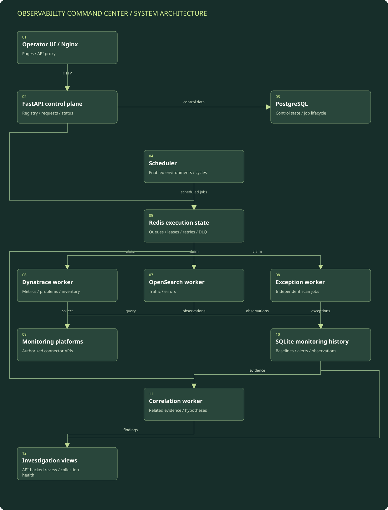

Register and select the environment
The control plane loads cluster and agent configuration and uses stored connector credentials at execution time. The public architecture abstracts those environment identities.
Detailed architecture / Monitoring orchestration
A containerized monitoring control plane with scheduled collectors, durable worker queues, baseline evaluation, and cross-tool correlation.
Reconstructed from reviewed implementation. Environment names and operational identifiers are intentionally generalized.
Boxes represent logical modules and external systems; they do not imply a separate server for each box. On a narrow screen, scroll the diagram horizontally or open the full-size SVG. The tables below provide a text equivalent.

| Component | Responsibility | Boundary / qualification |
|---|---|---|
| Nginx and FastAPI | Serve the UI, proxy API requests, and expose the monitoring control plane. | Operator presentation is separated from long-running collector work. |
| PostgreSQL | Persists registry and job/control-plane records. | Separate from the SQLite monitoring database; not a claim that all data was migrated to PostgreSQL. |
| Redis | Coordinates ready/processing work, leases, retries, completion, and dead letters. | Queue state and heartbeats are part of the operating view. |
| Tool-specific workers | Run Dynatrace, OpenSearch, exception, and correlation jobs. | Unused/configuration-only integrations are not represented as active sources. |
| SQLite history | Retains metric history, baselines, alerts, and related monitoring state. | Local volume-backed storage is not automatically a multi-node data service. |
| Correlation and exception analysis | Assemble context across time windows and tools for investigation. | Possible relationships need operator validation; they are not proven root causes. |
The control plane loads cluster and agent configuration and uses stored connector credentials at execution time. The public architecture abstracts those environment identities.
A scheduler rotates across enabled environments and enqueues tool-specific work. The code includes an active-cycle guard and independent exception-scan jobs.
Workers claim jobs, maintain heartbeats and leases, run the appropriate collector, and record lifecycle results. Failures enter bounded retry logic and can reach a dead-letter queue.
Collectors gather metrics, problems, request/error information, or inventory as supported by their integration. Baseline logic evaluates current measurements and writes monitoring history and alerts.
Dependent correlation work combines relevant signals, while exception analysis evaluates its own completed time buckets. The operator reviews both findings and collection health through the API-backed UI.
Resume: one-view observability and reduced manual triage. Implementation review: Compose service boundaries, scheduler, queue runtime, worker dispatch, baseline detector, and correlation engine.